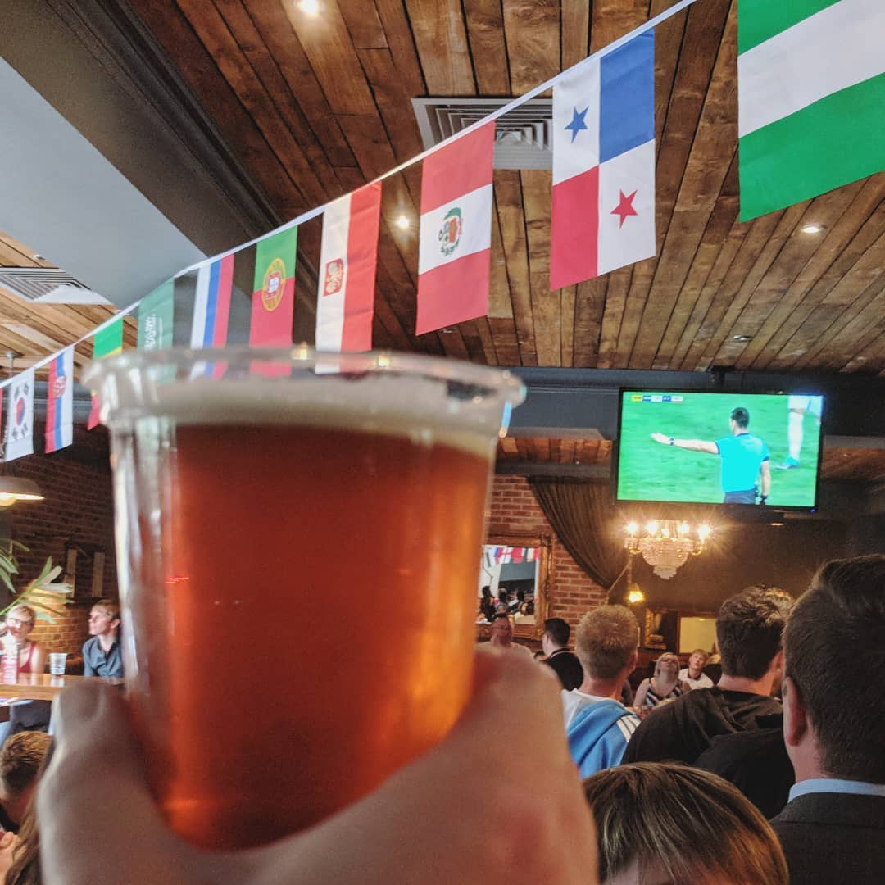
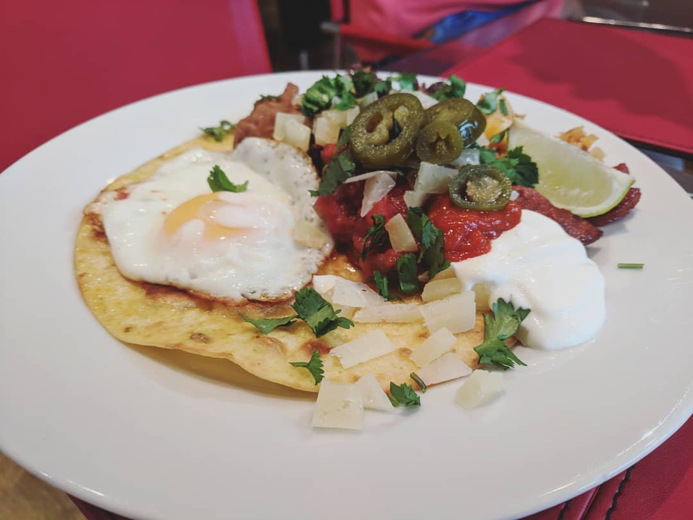
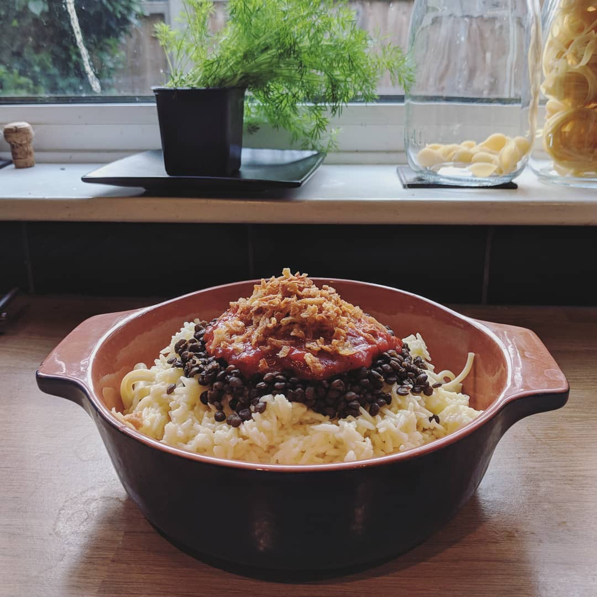

The rules
Each day of the tournament, pick a team that's playing.
Cook something from, or inspired by their national cuisine.
Do not repeat meals.
The aim is not to cook in support of a team, or to pick the winning team (although we like to keep track of how it ties in). It's to cook as wide a range of new dishes as possible, to learn new things about each country, and try new food. Aim to avoid repetition of teams as much as you can (strategic choices during group stages are advised).
For a better idea of how this works, have a look at one of the previous two tournament sites since we started taking this pretty seriously:
If you'd like to stay right up to date I tend to add everything to instagram before it appears on this site.
Countries eaten
Wins eaten
Draws eaten
Losses eaten
Monday 18th June 2018
üáπüá≥ Tunisia v üè¥Û†ÅßۆŢۆŕۆÅÆÛ†ÅßÛ†Åø England
1-2
English breakfast / pint
The last of the challenging days away was, to be honest, a bit of a cop out. Considering we were hungover from the wedding on the previous night and were due to meet friends in Newcastle that evening, there was never going to be much opportunity for cooking.
The original plan was to cook a full English... which got downgraded to packets of bacon... which we didn't even get time (or motivation) to cook, but we did have an English breakfast in a tiny little Otterburn cafe. I forgot to take a photo though, and as we all know, "pics or it didn't happen", so I was on the hunt for something else to document.
Dinner was a katsu curry burger, which was exactly what my hangover required, but I couldn't in good conscience claim that as English. Necking the Royal Warranted Heinz ketchup bottle on the table was also suggested, but in the end I decided to go heavy on the world cup side, light on the food. In lieu of a photo of my non-self-cooked breakfast, here is an English pint in front of the England game in very English Newcastle (topless men carrying a flag of St George saying BREXIT MEANS BREXIT were seen that evening, sigh).
Normal service will resume tomorrow.
Sunday 17th June 2018
üá©üá™ Germany v üá≤üáΩ Mexico
0-1
Huevos rancheros
Sunday was the day of the wedding, which meant another breakfast was the only opportunity for cooking. We decided to go for Mexican, and were pleased when our three friends sharing the cottage we hired decided to join us.
We'd managed to pick up some supplies on the long drive up and a few more in the tiny Otterburn village shop, but there were still a few workarounds needed - the only thing the cottage kitchen store cupboards included were salt, pepper, milk, and Tunnock's Teacakes.
We followed some loose recipes but not close enough to link, so here's our version:
0. Make each element and set aside to dish up individually when serving.
1. Cube some potato and parboil. Drain and set aside to cool.
2. At the same time as you're cooking the potato, fry some chorizo slices until crisp. Remove and place on kitchen roll, retaining any leftover oil. Use this to fry some onion, and then add in the cooled potato to crisp up. Season to taste.
3. I'm not a huge fan of raw tomato, so rather than a salsa we made a spicy tomato sauce. This was from a tin of tomato, garlic, jalapeno, chilli sauce, a pinch of cumin, and the juice of a lime. One diner wasn't keen on coriander, or we'd probably have stirred some through.
4. We had a tin of refried beans which were heated through, but also cooked a tin of black beans with garlic and lime.
5. If you have more than one small frying pan, you want to fry a corn tortilla in some oil until browned both sides, whilst also cooking some eggs. We fried ours due to a lack of saucepans, but you could also poach them.
6. Put the tortilla on a plate. Add a portion of eggs and each of the other components that you've cooked. Top with manchego cheese (ours was chopped as there was no grater...), chilli sauce, sour cream, coriander, jalapenos, and a squeeze of lime.
Saturday 16th June 2018
üá´üá∑ France v üá¶üá∫ Australia
2-1
Fairy bread

Every time we play this, you have some days where previously arranged social engagements mean that you're going to have some struggles actually cooking. Today is one of those days. As an aside, I'm trying not to think about the fact that I'm going to be in Japan for the closing stages... let's just say they'd better do well!
With a 7 hour drive ahead and a weekend away for a friend's wedding, we weren't going to be able to do dinner or lunch and needed to get a bit creative. Australia to the rescue! This nutritious and nourishing snack is Fairy Bread, which Wikipedia informs me dates back to the 1920s. It's served at kids parties by people who don't value their sanity, and I figured that it'd be good road trip sustenance. I managed three slices. The butter is just too much.
Whilst researching this I did enjoy the raft of opinionated articles out there in the fairy bread community. Here are a few for your reading pleasure:
Australia, we need to talk about fairy bread - Munchies (Vice)
Sorry, but this is how you actually make fairy bread - Huffington Post
Fairy bread is an abomination - Lifehacker
Friday 15th June 2018
üá™üᨠEgypt v üá∫üáæ Uruguay
0-1
Koshari
First day excitement led to second day "oh god I need to finish this proposal and get it sent" so Robert took the reins for this one. I shouldn't have expected anything else having seen the recipe, but this is a CARBTASTIC dish. It's basically a layer of pasta, with a layer of rice, with a layer of lentils, covered in two sauces. I'd also bought chickpeas, which some recipes include, but Robert didn't know that and left them out.
The limey tomato sauce was the highlight of this dish and I'd definitely use that again in something else, but not sure that the rest of this one will be coming into regular rotation.
Thursday 14th June 2018
üá∑üá∫ Russia v üá∏üᶠSaudi Arabia
5-0
Blinis and caviar, beef stroganoff


We're baaaaaack! First day excitement! We thought that it was only appropriate to go with the home team for this one, which is something we've done for the last two tournaments. After researching options at the weekend I decided to go for two courses: blinis and caviar, followed by beef stroganoff.
For the blinis, there were tons of recipes out there but I ended up following a pretty typical pancake recipe. As I only wanted a couple I used 1/2 cup of self-raising flour (actually wholemeal as I had some I needed to use up), an egg, 1/2 cup of milk, and a pinch of salt. I cooked each individually in a mini frying pan in a small amount of oil before resting them on kitchen roll. I added crème fraîche to some lemon zest and dill, which was put on top along with smoked salmon and more lemon zest/dill leaves, plus caviar. Unfortunately I was limited by my local supermarket on this front (red ikura caviar is my absolute favourite), so this was just the cheap black stuff.
I don't think I've ever had stroganoff before, mainly because it always, always comes with mushrooms, which are my single most hated food. When I was first looking it was originally a write-off for this reason... however, Wikipedia to the rescue! According to this, the first-known recipe (1871) does not include mushrooms (or onions, but I have no issue with them, so they stay). I therefore decided to honour this, following those well-known Russians the Hairy Bikers' recipe but leaving out the mushrooms. This was accompanied by chips, which according to Wikipedia again is an acceptable accompaniment. These were sliced thinly and put in the oven with hot rapeseed oil, seasoning, and three garlic cloves until crisp.
This was really enjoyable, and I'd definitely cook it again as a quick evening meal.